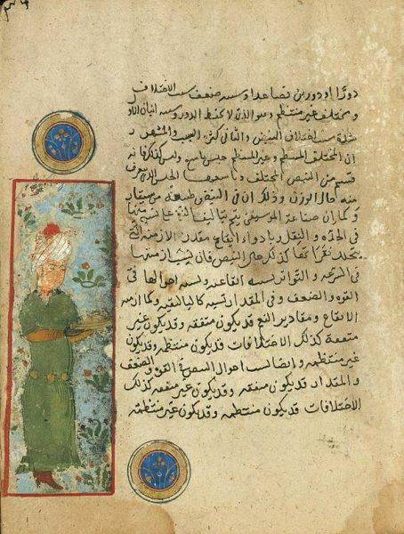

Who Was Al-Farabi?
Al-Farabi (Abū Naṣr Muḥammad ibn Muḥammad al-Fārābī, c. 870–950/951 CE) was one of the most important philosophers of the medieval Islamic world. His work covered logic, metaphysics, philosophy of mind, ethics, political philosophy, religion, mathematics, and music.
Al-Farabi lived during the period in which Greek philosophy had become an important part of intellectual life in the Islamic world. He studied and developed ideas associated with Aristotle and Plato, while also creating original philosophical theories concerning intellect, human perfection, society, religion, and political rule.
His most famous philosophical idea is his conception of the Virtuous City, an ideal political community organized around the pursuit of genuine human happiness and intellectual and moral perfection. His political philosophy combines Greek philosophical traditions with the intellectual circumstances of the Islamic world. :contentReference[oaicite:1]{index=1}
Al-Farabi: Quick Facts
- Full name — Abū Naṣr Muḥammad ibn Muḥammad al-Fārābī
- Born — c. 870 CE
- Died — c. 950–951 CE
- Known as — Al-Farabi, Alfarabius, and the "Second Master"
- Philosophical tradition — Arabic and Islamic philosophy
- Major influences — Plato, Aristotle, and Neoplatonic philosophy
- Major subjects — Logic, metaphysics, epistemology, psychology, ethics, political philosophy, religion, and music
- Best-known political concept — The Virtuous City
- Important philosophical concept — The Active Intellect
- Major work — The Opinions of the People of the Virtuous City
- Other major work — Enumeration of the Sciences
Al-Farabi's Life and Historical Background

Reliable information about Al-Farabi's early life is limited. He was probably born around 870 CE in or near Farab in Central Asia and later moved toward the major intellectual centers of the Islamic world.
He spent important periods of his intellectual life in Baghdad, where he studied philosophy and logic, and later lived in Syria, including Damascus. He died in Damascus around 950 or 951 CE. :contentReference[oaicite:2]{index=2}
Unlike many later biographical stories about philosophers, the details of Al-Farabi's life should be treated cautiously. Modern scholarship emphasizes that relatively little information about his biography can be established with confidence. :contentReference[oaicite:3]{index=3}
Why Is Al-Farabi Called the Second Master?
Al-Farabi is traditionally known as the "Second Master", while Aristotle is regarded as the "First Master." The title reflects Al-Farabi's extraordinary reputation as a philosopher and especially as a scholar of logic.
His extensive engagement with Aristotle helped make him one of the most influential interpreters of Aristotelian philosophy in the medieval Islamic world.
The title should not be interpreted as meaning that Al-Farabi simply copied Aristotle. His writings develop original approaches to logic, metaphysics, intellect, political philosophy, religion, and music. :contentReference[oaicite:4]{index=4}
Al-Farabi and Greek Philosophy
Greek philosophy provided the most important philosophical foundation for Al-Farabi's work. He was deeply familiar with Aristotle and also drew extensively upon Plato and traditions of Neoplatonic thought.
Al-Farabi's philosophical project was partly concerned with understanding the relationship between Plato and Aristotle. His work The Harmonization of the Two Opinions of the Two Sages is particularly important in this context.
His political philosophy also adapts ideas associated with Plato's Republic and Aristotle's ethical and political thought to the intellectual conditions of the Islamic world. :contentReference[oaicite:5]{index=5}
Al-Farabi's Philosophy of Logic
Logic was one of Al-Farabi's most important philosophical interests. He regarded logic as a fundamental instrument for disciplined reasoning and the acquisition of knowledge.
Al-Farabi wrote extensively about different forms of reasoning, demonstration, definition, language, and argument. His understanding of logic was strongly shaped by Aristotle's logical works.
His treatment of logic contributed to the development of the Arabic logical tradition and helped establish logic as a central component of philosophical education in the medieval Islamic world.
Al-Farabi's Enumeration of the Sciences
Enumeration of the Sciences (Iḥṣāʾ al-ʿUlūm) is one of Al-Farabi's most important works for understanding his classification of human knowledge.
Al-Farabi organizes different intellectual disciplines and examines their relationships. His treatment includes language, logic, mathematics, natural science, metaphysics, political science, jurisprudence, and theology.
The work demonstrates how broadly Al-Farabi understood philosophy. For him, intellectual disciplines were not isolated subjects but parts of a larger structure of knowledge. The work later had considerable influence through medieval Latin translations. :contentReference[oaicite:6]{index=6}
What Was Al-Farabi's Philosophy of Metaphysics?
Al-Farabi's metaphysics investigates existence, causation, the structure of reality, and the relationship between the First Existent and the beings that depend upon it.
His cosmological framework contains a hierarchy of intellectual and celestial principles. At its highest level stands the First Existent, from which the ordered structure of reality ultimately derives.
Al-Farabi's metaphysical system is strongly influenced by Neoplatonic ideas of emanation, although his writings also contain more explicitly Aristotelian treatments of ontology. Modern scholarship therefore emphasizes the complexity of the relationship between these different strands in his thought. :contentReference[oaicite:7]{index=7}
Al-Farabi's Philosophy of God and the First Existent
In Al-Farabi's metaphysics, the First Existent occupies the highest position in the hierarchy of reality. The First is absolutely prior to everything else and is not dependent upon another cause for existence.
From this first principle proceeds an ordered hierarchy of intellectual and celestial realities. This framework allows Al-Farabi to explain the relationship between the ultimate source of reality and the world of human beings.
His philosophical account of God therefore forms an important connection between metaphysics, cosmology, and philosophy of religion.
Al-Farabi's Theory of Intellect
The theory of intellect is one of the most important parts of Al-Farabi's philosophy. He investigates how human beings move from the capacity for knowledge toward actual intellectual understanding.
In his Epistle on the Intellect, Al-Farabi discusses different meanings and forms of intellect. His account includes the potential intellect, actual intellect, acquired intellect, and the Active Intellect.
The Active Intellect plays a crucial role in his epistemology and psychology. It provides the principles through which human beings can acquire intelligible knowledge and develop their rational capacities. :contentReference[oaicite:8]{index=8}
What Is the Active Intellect in Al-Farabi's Philosophy?
The Active Intellect is an immaterial intellect that occupies a crucial position in Al-Farabi's philosophical psychology and cosmology.
It plays a role in making intelligible knowledge possible for human beings. Through its activity, the human rational faculty receives the principles necessary for developing intellectual understanding.
The Active Intellect is therefore important not only to Al-Farabi's philosophy of mind but also to his account of human perfection and happiness. :contentReference[oaicite:9]{index=9}
Al-Farabi's Epistemology and Theory of Knowledge
Al-Farabi's epistemology examines how human beings acquire knowledge and how intellectual capacities develop from potentiality into actuality.
Human beings initially possess rational capacities that must be developed through intellectual activity, education, experience, and the acquisition of knowledge.
The perfection of the intellect is closely connected with the highest human goal. For Al-Farabi, genuine happiness depends upon the development and perfection of the rational faculty. :contentReference[oaicite:10]{index=10}
What Did Al-Farabi Mean by Happiness?
Happiness (saʿāda) is one of the central concepts in Al-Farabi's philosophy. He does not understand happiness simply as pleasure, wealth, status, or physical comfort.
Genuine happiness is connected with human perfection, especially the perfection of the rational and intellectual capacities. A human being must develop knowledge and virtue in order to approach the highest form of happiness.
This explains why Al-Farabi's ethics and political philosophy are closely connected. Society should be organized in a way that helps human beings pursue genuine happiness rather than merely satisfying bodily needs or acquiring wealth and power. :contentReference[oaicite:11]{index=11}
What Was Al-Farabi's Political Philosophy?
Al-Farabi's political philosophy asks what kind of society can enable human beings to achieve their highest perfection and genuine happiness.
He does not regard political organization as merely a system for providing food, security, economic activity, and physical survival. A properly ordered society should also guide its citizens toward intellectual and moral development.
His political thought therefore connects politics, ethics, psychology, metaphysics, education, and philosophy.
What Is Al-Farabi's Virtuous City?
The Virtuous City (al-Madīna al-Fāḍila) is Al-Farabi's most famous political concept. It describes a community in which people cooperate to achieve genuine happiness and human perfection.
In an excellent city, political institutions and social relationships should be directed toward the proper human end rather than merely toward material survival.
Al-Farabi's ideal city is therefore both a political and philosophical model. Its organization reflects his understanding of human nature, the hierarchy of knowledge, virtue, and the structure of reality. :contentReference[oaicite:12]{index=12}
Al-Farabi's Philosopher-King and Ideal Ruler
The ruler of the Virtuous City must possess exceptional intellectual and moral qualities. Al-Farabi's ideal ruler combines philosophical knowledge with the ability to guide a community toward its proper end.
This idea has clear connections with Plato's philosopher-king, but Al-Farabi transforms the concept within his own philosophical and Islamic context.
The ideal ruler must understand reality, human nature, happiness, and the proper organization of society. Where necessary, the ruler must also be able to communicate philosophical truths through forms of teaching and representation accessible to citizens. :contentReference[oaicite:13]{index=13}
Al-Farabi's Classification of Deficient Cities
Al-Farabi does not only describe the Virtuous City. He also examines forms of society that fail to direct citizens toward genuine happiness.
Some societies are organized primarily around wealth, pleasure, honor, domination, or physical survival. Such communities may satisfy immediate needs but remain deficient from the standpoint of genuine human perfection.
His analysis demonstrates that Al-Farabi evaluates political systems according to their ultimate purpose: whether they genuinely help human beings attain knowledge, virtue, and happiness. :contentReference[oaicite:14]{index=14}
Al-Farabi on Philosophy and Religion
The relationship between philosophy and religion is one of the most distinctive aspects of Al-Farabi's political thought.
Al-Farabi understands religion as a system of beliefs, practices, and rules that guides a community toward its intended goals. Religious teaching communicates truths through forms appropriate to the intellectual capacities of a population.
Philosophy, by contrast, seeks demonstrative knowledge through intellectual reasoning. Al-Farabi therefore distinguishes philosophical knowledge from the symbolic and persuasive modes through which religion can guide a broader population. :contentReference[oaicite:15]{index=15}
Al-Farabi's Philosophy of Prophecy
Al-Farabi's theory of prophecy is closely connected with his philosophy of imagination, intellect, and political leadership.
The prophet possesses an exceptionally developed imaginative capacity through which intelligible truths can be represented in forms that ordinary people can understand.
This allows Al-Farabi to connect prophecy with political leadership. The ideal ruler must be capable of guiding citizens toward the appropriate intellectual and ethical goals of the community.
Al-Farabi's Ethics and Moral Philosophy
Although ethics is not as extensive a part of his surviving corpus as political philosophy or logic, virtue and moral development remain essential to Al-Farabi's account of human perfection.
Human beings must cultivate appropriate habits and intellectual capacities. Moral virtues help organize the individual toward the proper human end rather than toward merely temporary pleasures or external goods.
This ethical dimension is essential to the Virtuous City: a good political community must cultivate citizens who are capable of pursuing genuine happiness. :contentReference[oaicite:16]{index=16}
Al-Farabi's Philosophy of Mind and Psychology
Al-Farabi's philosophy of mind examines the faculties of the human soul, including sensation, imagination, memory, and intellect.
His account of the human soul is important because it explains how people move from sensory experience toward abstract intellectual knowledge.
Imagination also plays a major role in his account of dreams, prophecy, political leadership, and the communication of philosophical truths through symbolic representations.
Al-Farabi's Cosmology and Hierarchy of Being
Al-Farabi presents a hierarchical account of the universe in which the First Existent stands at the highest level of reality.
From the First Existent there proceeds an ordered series of intellectual and celestial principles. His cosmological system contains multiple separate intellects associated with the celestial order, culminating in the Active Intellect.
This cosmology connects Al-Farabi's metaphysics with his psychology because the Active Intellect also plays a central role in human intellectual development. :contentReference[oaicite:17]{index=17}

Al-Farabi's Philosophy of Music
Al-Farabi was also a major theorist of music. His Great Book of Music (Kitāb al-Mūsīqā al-Kabīr) is regarded as one of the most important medieval musical treatises produced in the Islamic world.
His treatment of music goes beyond practical musical performance. He examines sound, intervals, rhythm, instruments, musical composition, and the theoretical foundations of musical harmony.
His work on music demonstrates the breadth of his intellectual interests and the connection he saw between mathematical and philosophical investigation. :contentReference[oaicite:18]{index=18}
Major Works of Al-Farabi
Al-Farabi wrote extensively on philosophy, logic, politics, religion, psychology, language, and music. Some of his most important works include:
- The Opinions of the People of the Virtuous City — Al-Farabi's best-known account of metaphysics, cosmology, human perfection, and the ideal political community.
- The Political Regime — A major work concerning political organization, human perfection, and the relationship between society and the cosmic order.
- Enumeration of the Sciences — A systematic classification of intellectual disciplines and their relationships.
- Epistle on the Intellect — A major treatment of intellect and human knowledge.
- The Attainment of Happiness — A work exploring human perfection, knowledge, and genuine happiness.
- The Harmonization of the Two Opinions of the Two Sages — A philosophical discussion concerning Plato and Aristotle.
- The Great Book of Music — Al-Farabi's major contribution to medieval music theory and philosophy.
- The Book of Religion — A significant work concerning religion, political community, and philosophical knowledge.
Modern scholarship also emphasizes that the chronological order of many of Al-Farabi's works remains uncertain, so claims about a simple linear development of his philosophy should be made cautiously. :contentReference[oaicite:19]{index=19}
Al-Farabi, Plato, and Aristotle
Al-Farabi's philosophy cannot be understood without considering his relationship to Plato and Aristotle.
From Aristotle, he drew heavily on logic, metaphysics, psychology, and natural philosophy. From Plato, he drew important resources for thinking about political organization, education, virtue, and the role of the philosopher.
Al-Farabi did not simply choose one philosopher over the other. Instead, he attempted to understand their philosophical relationship and to integrate their ideas into a broader philosophical framework. :contentReference[oaicite:20]{index=20}
Al-Farabi's Place in Islamic Philosophy
Al-Farabi occupies a central position in the history of Islamic philosophy and Arabic philosophy. His work transformed the philosophical inheritance of Greece into a systematic intellectual tradition in the Islamic world.
His writings on logic, metaphysics, psychology, political philosophy, and religion became important resources for later philosophers, including thinkers in the Islamic, Jewish, and Christian intellectual traditions.
His influence was particularly important for later philosophers such as Avicenna, as well as for philosophers in Andalusia and medieval Jewish thought. :contentReference[oaicite:21]{index=21}
Al-Kindi and Al-Farabi: What Is the Difference?
Al-Kindi and Al-Farabi belong to successive generations of early Arabic philosophy. Al-Kindi helped establish philosophical inquiry in the Arabic intellectual tradition, while Al-Farabi later developed a much more systematic treatment of logic, political philosophy, psychology, metaphysics, and the classification of knowledge.
Al-Kindi was particularly important in the early transmission and adaptation of Greek philosophical ideas. Al-Farabi built upon this broader intellectual environment and produced a more elaborate philosophical synthesis.
Together, they represent two crucial stages in the development of Islamic philosophy.
Al-Farabi and Avicenna: Influence on Islamic Philosophy
Avicenna (Ibn Sina) was strongly influenced by Al-Farabi. Avicenna famously described Al-Farabi as an important aid in understanding Aristotle's Metaphysics.
Al-Farabi's systematic treatments of logic, metaphysics, intellect, political philosophy, and the relationship between philosophy and religion provided important resources for later Islamic philosophical thought.
Avicenna would eventually develop his own highly sophisticated philosophical system, but Al-Farabi's influence forms an important part of the intellectual background to that development.
Al-Farabi's Influence and Legacy
Al-Farabi's influence extended well beyond the Islamic philosophical tradition. His works circulated in Arabic and later entered medieval Jewish and Latin intellectual traditions.
His political philosophy influenced later discussions of the relationship between philosophy, religion, political authority, and human perfection. His writings on logic and the classification of knowledge also contributed to the intellectual traditions that followed him.
His influence can be seen in thinkers such as Avicenna, Ibn Bajja, Ibn Tufayl, Averroes, and Maimonides, although the precise nature of that influence differs from thinker to thinker. :contentReference[oaicite:22]{index=22}
Al-Farabi's Main Philosophical Ideas
1. Human Beings Seek Perfection
Al-Farabi understands human life in terms of the pursuit of perfection. Intellectual and moral development are necessary for reaching the highest human end.
2. Genuine Happiness Is the Highest Human Goal
Happiness is not simply pleasure, wealth, honor, or physical security. Genuine happiness requires the perfection of the rational and intellectual capacities.
3. The Virtuous City Should Promote Human Happiness
A good political community should help citizens pursue genuine happiness rather than merely satisfying their material needs.
4. The Intellect Is Central to Human Perfection
Human beings become fully developed through the actualization of their intellectual capacities and acquisition of knowledge.
5. The Active Intellect Makes Intellectual Knowledge Possible
The Active Intellect plays a fundamental role in Al-Farabi's account of how human beings acquire intelligible knowledge.
6. Philosophy and Religion Serve Different Intellectual Functions
Philosophy seeks demonstrative intellectual knowledge, while religion communicates and organizes beliefs and practices in forms capable of guiding a wider community.
7. Political Leadership Requires Knowledge and Virtue
The ideal ruler must possess exceptional intellectual, moral, and practical qualities and guide the community toward its proper end.
Al-Farabi's Philosophy Explained Simply
Al-Farabi's philosophy can be understood through one central question: How can human beings and societies achieve genuine happiness and perfection?
- Human beings have rational capacities. These capacities allow people to acquire knowledge and understand reality.
- Knowledge and virtue lead toward perfection. A good human life requires intellectual and moral development.
- Society is necessary. Human beings cooperate with others because individuals cannot achieve their highest perfection entirely alone.
- The Virtuous City supports genuine happiness. Political institutions should help citizens develop toward their proper human end.
- The ruler needs knowledge and virtue. Political leadership should be directed by wisdom rather than merely by wealth, force, or ambition.
Why Is Al-Farabi Important in the History of Philosophy?
Al-Farabi is important because he transformed the philosophical inheritance of Plato, Aristotle, and Neoplatonism into one of the most sophisticated philosophical systems of the medieval Islamic world.
His contributions to logic, metaphysics, philosophy of mind, political philosophy, religion, ethics, and music demonstrate the extraordinary breadth of his intellectual project.
His political philosophy is particularly influential because it treats society as something that should be evaluated according to its ability to guide human beings toward genuine happiness and perfection.
For this reason, Al-Farabi remains a major figure not only in Islamic philosophy but also in the broader history of political philosophy, metaphysics, logic, and philosophy of mind. :contentReference[oaicite:23]{index=23}
Frequently Asked Questions About Al-Farabi
Who was Al-Farabi?
Al-Farabi was a major tenth-century philosopher of the Islamic world who wrote about logic, metaphysics, psychology, political philosophy, ethics, religion, mathematics, and music.
What is Al-Farabi famous for?
Al-Farabi is especially famous for his political philosophy, the concept of the Virtuous City, his theory of intellect, his work on logic, and his attempt to synthesize Platonic, Aristotelian, and Neoplatonic philosophy.
Why is Al-Farabi called the Second Master?
Al-Farabi is traditionally called the "Second Master" because Aristotle was regarded as the "First Master." The title reflects Al-Farabi's exceptional reputation, particularly in logic and philosophy.
What is Al-Farabi's Virtuous City?
The Virtuous City is Al-Farabi's model of an excellent political community. Its institutions and citizens cooperate toward genuine human happiness and perfection.
What was Al-Farabi's political philosophy?
Al-Farabi's political philosophy argues that society should be organized toward the highest human goal: genuine happiness and perfection. His ideal ruler must possess intellectual and moral excellence.
What did Al-Farabi believe about happiness?
Al-Farabi regarded genuine happiness as the highest human goal. It is connected with intellectual and moral perfection rather than merely with pleasure, wealth, honor, or physical security.
What is the Active Intellect according to Al-Farabi?
The Active Intellect is an immaterial intellect that plays an important role in Al-Farabi's cosmology and theory of knowledge. It helps make human intellectual understanding possible.
What was Al-Farabi's theory of intellect?
Al-Farabi distinguishes several forms or stages of intellect, including potential, actual, and acquired intellect, while also discussing the separate Active Intellect.
What did Al-Farabi say about Plato and Aristotle?
Al-Farabi studied both Plato and Aristotle extensively and attempted to understand and harmonize their philosophical positions. Their ideas strongly influenced his political philosophy, logic, metaphysics, and ethics.
What is Al-Farabi's most famous book?
One of Al-Farabi's most famous works is The Opinions of the People of the Virtuous City, also known as The Virtuous City or The Perfect State in some translations.
What is Al-Farabi's Enumeration of the Sciences?
Enumeration of the Sciences is a work in which Al-Farabi classifies major fields of knowledge, including language, logic, mathematics, natural science, metaphysics, and political disciplines.
What was Al-Farabi's contribution to Islamic philosophy?
Al-Farabi helped develop a systematic philosophical tradition in the Islamic world by combining Greek philosophy with questions concerning metaphysics, human perfection, politics, religion, and knowledge.
How did Al-Farabi influence Avicenna?
Al-Farabi's works on logic, metaphysics, intellect, and philosophy provided important intellectual resources for Avicenna. Avicenna regarded Al-Farabi as particularly helpful for understanding Aristotle's metaphysics.
Was Al-Farabi influenced by Aristotle?
Yes. Aristotle was one of Al-Farabi's most important philosophical influences, especially in logic, metaphysics, psychology, and natural philosophy.
Did Al-Farabi believe philosophy and religion were the same?
No. Al-Farabi distinguishes philosophical knowledge from religious belief and representation. Philosophy seeks demonstrative knowledge, while religion communicates beliefs and practices in forms capable of guiding a broader community.
What was Al-Farabi's contribution to music?
Al-Farabi wrote the Great Book of Music, one of the major medieval works on music theory in the Islamic world. It examines musical sounds, intervals, rhythm, instruments, and theoretical principles.
Related Islamic and Arabic Philosophers
Explore other major thinkers in the development of Islamic philosophy, Arabic philosophy, Persian philosophy, and medieval intellectual history.
Related Areas of Philosophy
Al-Farabi's philosophy connects Islamic philosophy with political philosophy, metaphysics, epistemology, logic, ethics, philosophy of mind, philosophy of religion, cosmology, and the history of Greek philosophy.
Why Al-Farabi Still Matters
Al-Farabi occupies one of the most important positions in the history of Islamic philosophy. His work brought together Greek philosophical traditions and the intellectual concerns of the medieval Islamic world.
His theories of intellect, knowledge, happiness, political organization, religion, and the Virtuous City demonstrate how closely philosophy, ethics, psychology, and politics can be connected.
His influence on later thinkers such as Avicenna, Averroes, and Maimonides makes him essential for understanding the development of medieval philosophy across Islamic, Jewish, and Christian intellectual traditions.
Explore Great Philosophers